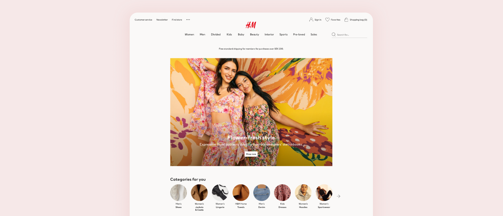
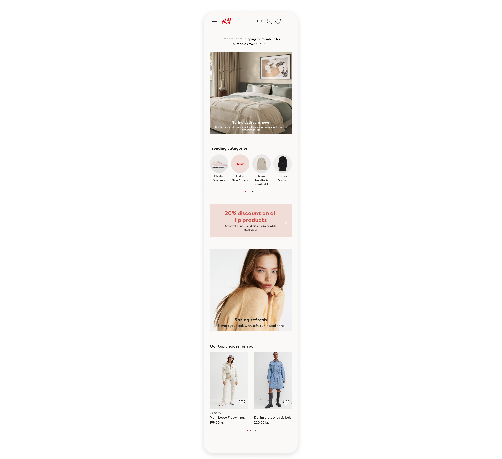
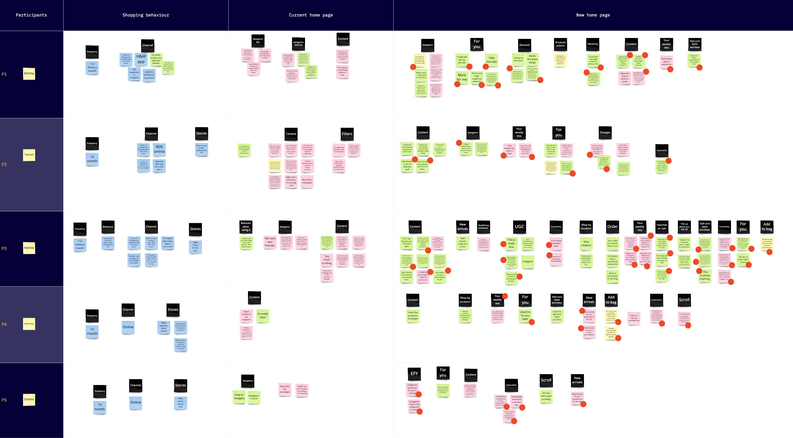
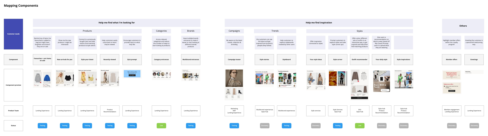
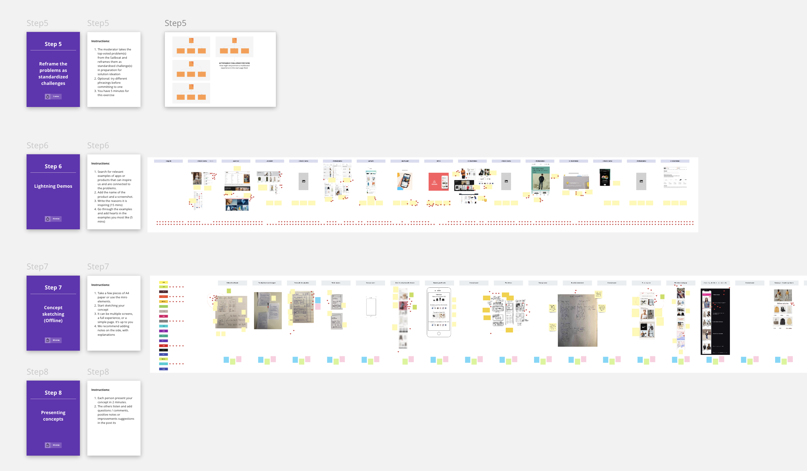
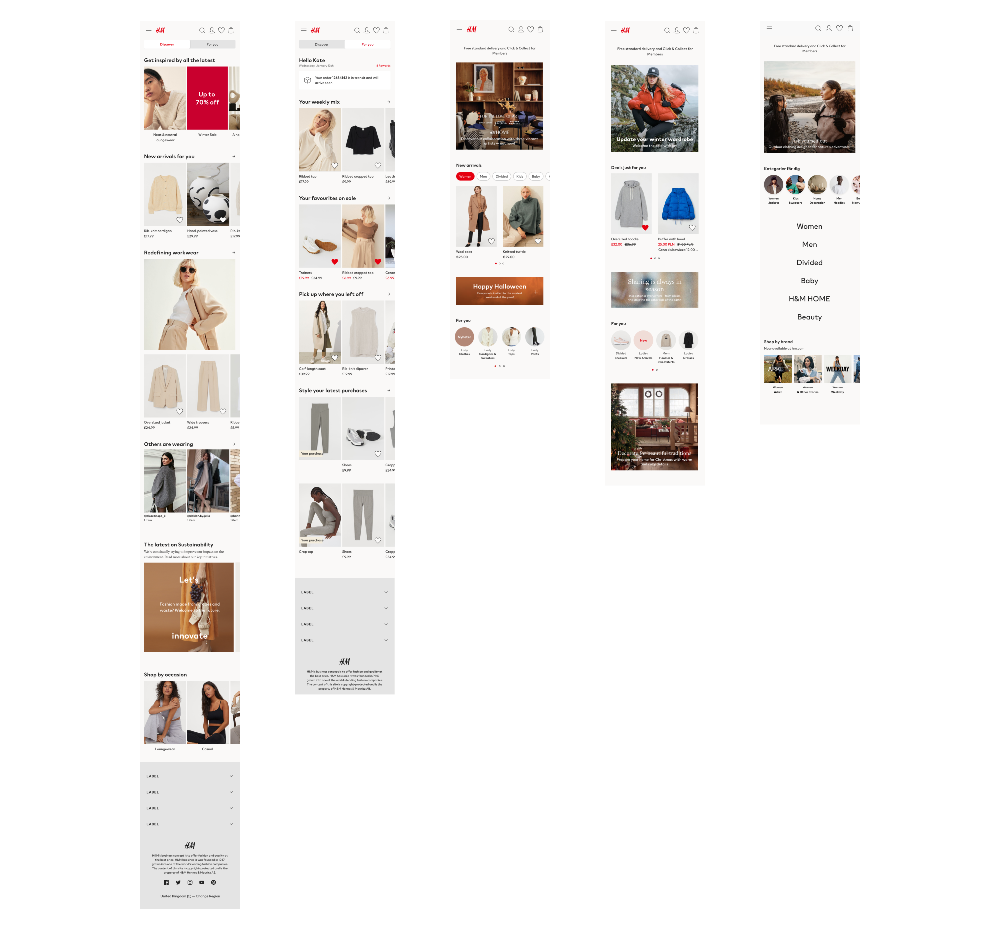
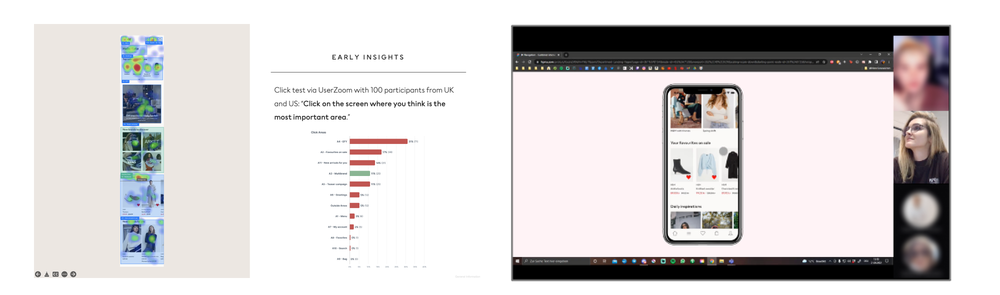
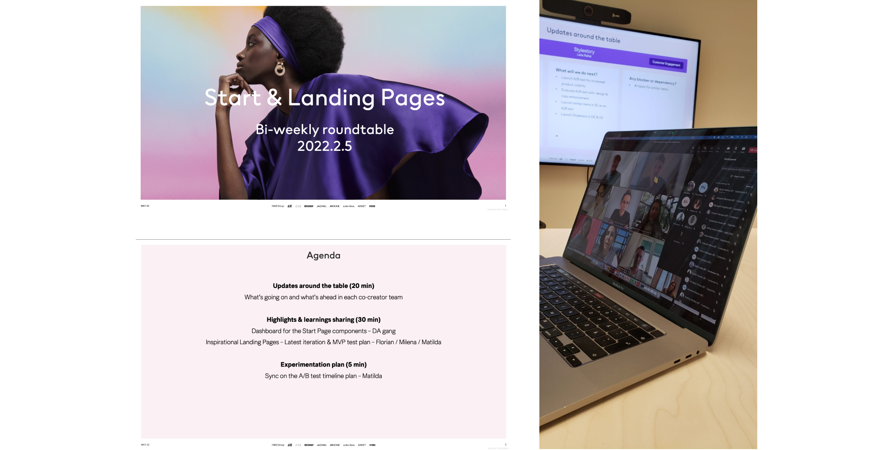

E-commerce Home Page
Product design project at H&M.


The Challenge
The H&M homepage receives tens of millions of visits each month — yet for many customers, it felt generic, uninspiring, and disconnected from what they actually wanted to see. The opportunity was significant: if we could make the homepage feel more personal and relevant, we could meaningfully improve how easily customers discover products, increase engagement, and ultimately drive revenue.
The goal was to redesign the homepage experience to serve three very different types of visitors — new customers, returning browsers, and logged-in members — while improving the accuracy and usefulness of personalised and recommended content across all touchpoints.
My Role
- Led user research to understand customer behaviour and uncover design opportunities
- Facilitated cross-functional workshops to align stakeholders and generate solutions
- Produced low- and high-fidelity prototypes for testing and stakeholder communication
- Presented design decisions and rationale to senior stakeholders
- Ran recurring alignment sessions to keep all contributing teams informed and coordinated
- Served as the main point of contact for the pre-transactional customer journey across landing experiences

Current Experience Analysis
Before proposing anything new, we needed to understand how the existing homepage was actually performing. Working alongside data analysts, we audited the current experience and surfaced some telling numbers.

Key data findings from the homepage in 2020:
- 41 million unique page views — 8% of all pages on the site
- 42% of customers begin their session on the homepage
- Visitors spend just 21 seconds on average — compared to a 5-minute average session duration
- A 13.74% bounce rate — meaning over 1 in 8 visitors left without exploring further
The data made clear that the homepage was failing to pull people in. Most visitors were passing through it without engaging — a significant missed opportunity at the top of the funnel.
User Interviews
To understand the why behind the numbers, we conducted interviews with 5 customers, exploring how they interacted with the homepage, what caught their attention, and what frustrated them. Key questions included:
- How do you typically shop online, and which sites or apps do you use?
- What's your first impression of the H&M homepage?
- What catches your attention first — and what do you ignore?
- What would you change, and why?
- What would you expect to see here that you currently don't?

Four consistent pain points emerged across every interview:
- Lack of shoppable content — customers couldn't easily act on what they saw
- Irrelevant content — the homepage felt disconnected from their interests and browsing history
- No sense of personalisation — it felt like the same page for everyone
- Missing inspiration and curation — customers wanted to be sparked, not just sold to

With qualitative and quantitative data in hand, we synthesised the insights into four customer needs that would guide our design direction:
A safe house: Customers need a reliable starting point — a place with quick, clear access to the assortment they know and trust, and somewhere they can return to when exploration stalls.
Inspiration: Customers want content that sparks new ideas and opens up discovery — not just a catalogue of products, but a curated, editorial entry point into the brand.
Personalisation: Customers expect relevance. Favourited and recently viewed products, visited categories, and smart recommendations were consistently mentioned as things they wanted — and weren't getting.
Flexibility: The homepage needs to flex for different user contexts, regional markets, and seasonal moments — a rigid, one-size-fits-all structure wasn't working.
To operationalise these insights, we created a component map that defined the job-to-be-done for each element of the page — giving the team a shared framework for evaluating and prioritising solutions.


We ran a series of cross-functional workshop sessions to translate insights into concrete solutions. Participants included data analysts, product owners, product designers, AI engineers, and business experts — ensuring that every proposed solution was grounded in both customer needs and technical feasibility.


High-fidelity prototypes were created to test the core concept and each individual component. The prototypes were built to cover three distinct visitor scenarios — new visitor, returning visitor, and logged-in member — as well as both mobile and app touchpoints, ensuring the solution worked across the full range of real-world contexts.


Validation was rigorous and multi-layered. Rather than relying on a single method, we used a combination of qualitative and quantitative techniques to pressure-test both the concept and individual components:
- Moderated user interviews
- Unmoderated usability tests
- Card sorting to validate content hierarchy
- Design reviews with cross-functional teams
- A/B test experiments
- Heatmap analysis


After several rounds of iteration informed by validation findings, the MVP was launched in March 2022. The results were immediate and measurable:
- 32% decrease in bounce rate
- +2.2% increase in revenue
- +118% increase in visits to brand product listing pages (PLPs)
- Component engagement increased to between 16% and 30% CTR
- Visits to product detail pages (PDPs) up 2.62%; PLP visits up 5.91%
Beyond the launch metrics, the project established a new model for how homepage work is done at H&M. With multiple teams now contributing to the page, I introduced and facilitated recurring alignment sessions to ensure everyone remained coordinated, informed, and working towards the same goals — turning a complex multi-team effort into a coherent, continuously improving product.
